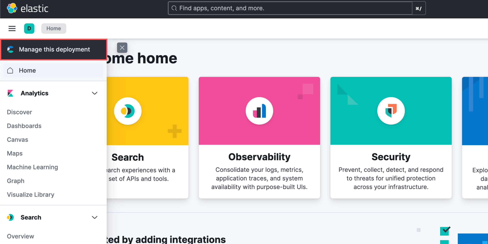
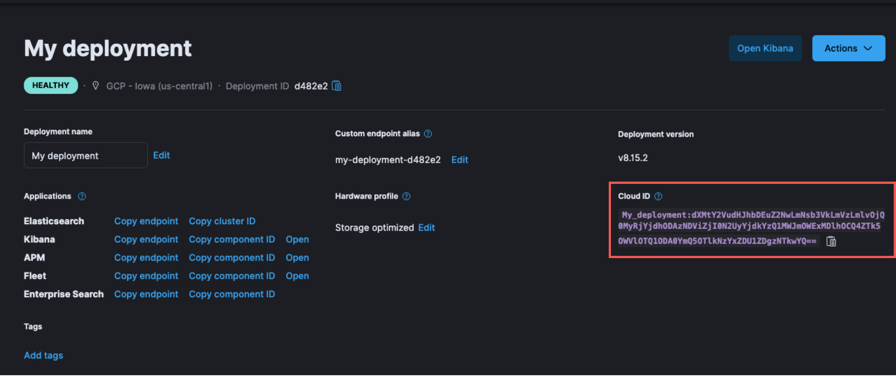
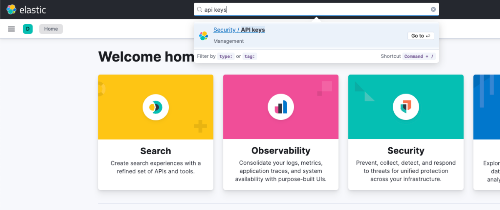
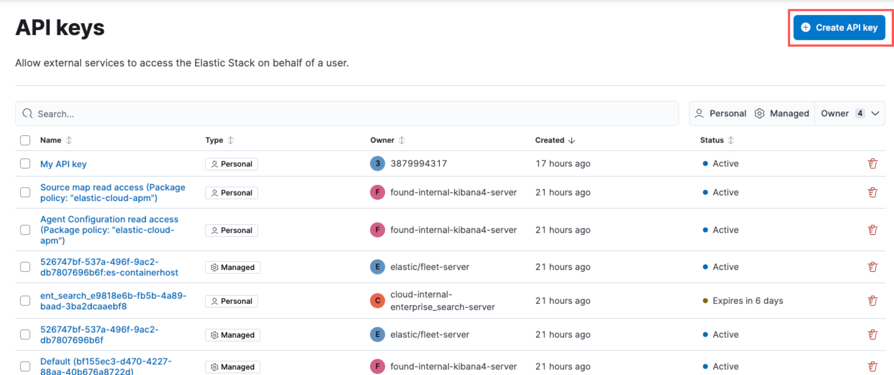
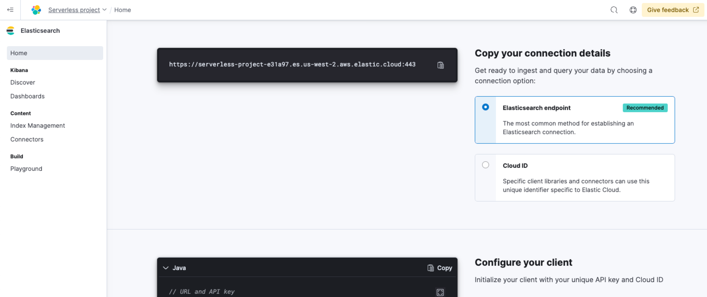
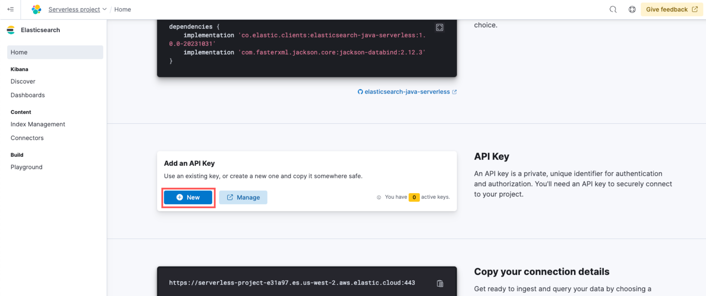

Find your connection details
editTo connect to your Elasticsearch deployment, you need either a Cloud ID or an Elasticsearch endpoint, depending on the deployment type you use. For secure connections, it’s recommended to use an API key for authentication.
- Learn how to find your Cloud ID for Elastic Cloud or self-hosted deployments.
- Learn how to create an API key for Elastic Cloud or self-hosted deployments.
- Learn how to find your Elasticsearch endpoint or Cloud ID for a serverless deployment.
- Learn how to create an API key for a serverless deployment.
Elastic Cloud and self-hosted deployments
editFind your Cloud ID
edit- Navigate to the Elastic Cloud home page.
-
In the main menu, click Manage this deployment.
 -
The Cloud ID is displayed on the right side of the page.

Create an API key
edit-
To navigate to API keys, use the global search bar.
 -
Click Create API key.
 - Enter the API key details, and click Create API key.
- Copy and securely store the API key, as it will not be shown again.
Serverless deployments
editFind your Elasticsearch endpoint
edit- Navigate to the serverless project’s home page.
-
Scroll down to the Copy your connection details section, and copy the Elasticsearch endpoint.

The Cloud ID is also displayed in the Copy your connection details section, which you can use with specific client libraries and connectors.
Create an API key
edit- Navigate to the serverless project’s home page.
-
Scroll down to the Add an API Key section, and click New.
 - Enter the API key details, and click Create API key.
- Copy and securely store the API key, as it will not be shown again.